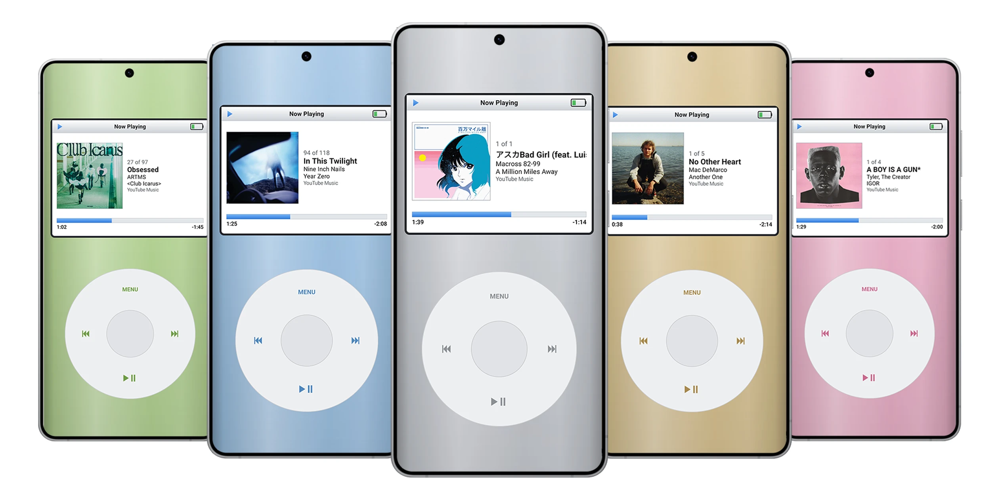
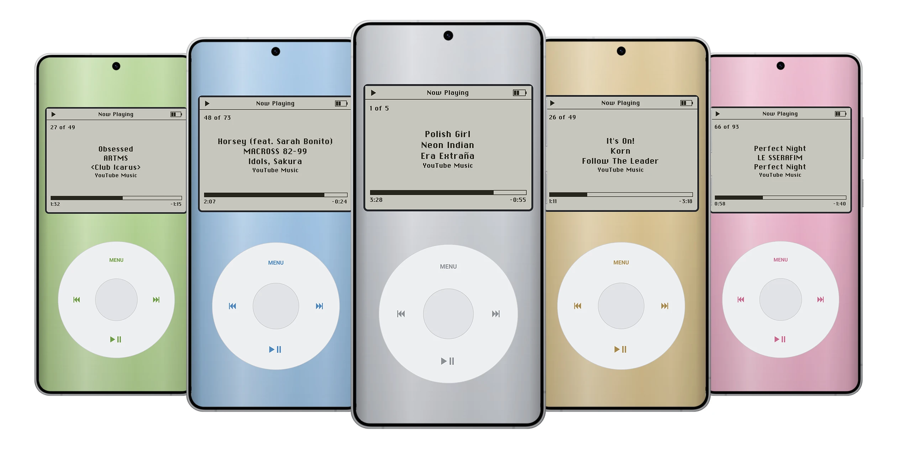
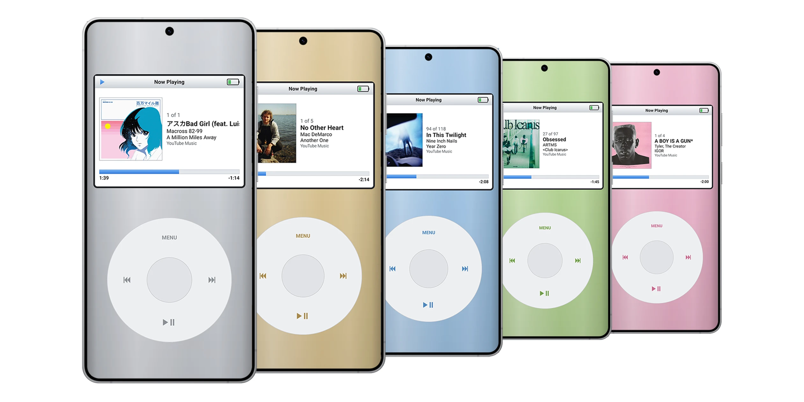

The click wheel,
for whatever’s playing.
DroidPod gives you a classic MP3-player screen and a touch click wheel that control the music already playing in Spotify, YouTube Music, or any other app that shows media controls on your lock screen.

Everything you need.
Nothing you don’t.
No account. No login. No API keys. No internet access. DroidPod only uses Android’s built-in media controls.
-
Now Playing
Title, artist, album and album art, with elapsed and remaining time.
-
Wheel controls
Spin to change volume. Press the center to switch to scrubbing. Tap ⏮ ⏭ ⏯ and MENU, or hold ⏮/⏭ to rewind or fast-forward.
-
Up Next
See the play queue, when the playing app shares it.
-
Shuffle, repeat & more
Hold the center button for shuffle, repeat and app actions like Like or Thumbs Up — whatever the app exposes.
-
Players
Switch between apps that are playing, or resume Spotify, Apple Music, YouTube Music, Amazon Music, Tidal or Qobuz. Use Add Player for any other app.
-
Make it yours
Case colors, click sound, haptics (Off, Light or Strong), wheel sensitivity, full screen, keep screen on and show on lock screen.
What it doesn’t do: browse your library, search, or open playlists. Those stay in the streaming app. Android doesn’t give third-party apps a way to browse YouTube Music, so DroidPod sticks to what works with every player.
System style
Retro.
Prefer the look of older monochrome iPods? Try the Retro style, a simulated monochrome look with the Chicago Kare pixel font.

Classic
A bright color screen with album art front and center, track count, and a blue progress bar.
Retro
A grey monochrome display with centered, pixel-perfect track info. Same wheel, same controls, different decade.
Eight finishes.
Pick a case color in Settings. The wheel follows along.
- Silver
- Gold
- Blue
- Green
- Pink
- White
- Black
- Red

Using the wheel.
If you’ve held one before, you already know how. The system back gesture works like MENU.
| Spin | Move through menus; volume on Now Playing |
|---|---|
| Center | Select; on Now Playing, switch between volume and scrubbing |
| Hold center | Actions for the playing app (Like, shuffle, repeat, open app) |
| MENU | Back |
| Hold MENU | Back to the main menu |
| ⏯ | Play / pause (resumes the last player if nothing is playing) |
| ⏮ / ⏭ | Previous / next track |
| Hold ⏮ / ⏭ | Rewind / fast-forward |
Up and running in a minute.
Requires Android 11 or newer.
-
Download
Get the latest
DroidPod-vX.Y.Z.apkfrom Releases and open it to install. -
Grant access
Open DroidPod, choose Grant Access, then turn DroidPod on. DroidPod needs Notification Access to see what’s playing. It never reads your notifications.
-
If the switch is greyed out
Android 13 and newer does this for apps installed outside the Play Store.
- Go back to DroidPod and choose Restricted Settings. This opens DroidPod’s App info page.
- Tap ⋮ in the top corner, then Allow restricted settings and confirm.
- Go back and choose Grant Access again.
To update, install the newer APK over the old one. Your settings are kept.
What depends on the app
DroidPod can only use the controls each app offers. Spotify Free doesn’t allow going back a track or seeking, so those do nothing there.
Up Next only appears when the app shares its queue (YouTube Music does; Spotify doesn’t). Shuffle and Repeat use the app’s own buttons when it has them.
Help test players
Every app exposes slightly different controls. Settings → Diagnostics shows what each active player supports.
Press the center button to copy the report, then paste it into an issue. The report leaves out song titles and artists.
Build it yourself
Needs JDK 21 and the Android SDK (API 37).
./gradlew testDebugUnitTest assembleDebug
The debug build installs as a separate app, DroidPod Debug, so it can sit next to a release build.